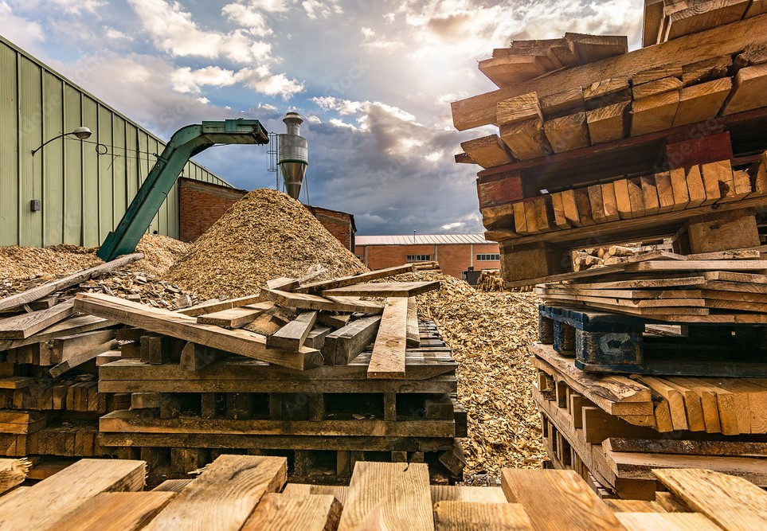
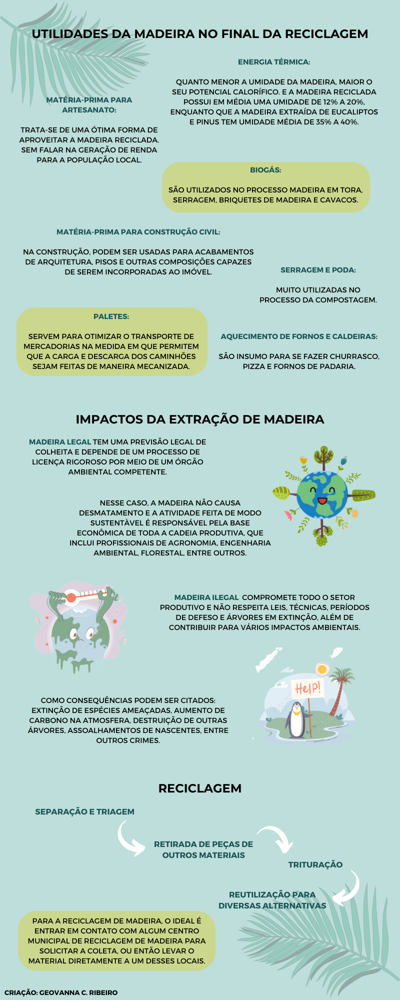

A reciclagem de madeira proporciona a preservação de árvores em florestas, além da economia de energia. A redução do seu descarte em aterros sanitários e lixões também faz parte do objetivo da reciclagem deste material. Nesse meio, diversos objetos de madeira podem ser reciclados, dentre eles: galhos, troncos de árvores, caixotes, embalagens, móveis, ripas da construção civil, dormentes de linhas ferroviárias, paletes, madeiras de demolição e madeiras em geral.
O processo de reciclagem da madeira é semelhante ao dos demais materiais. Primeiramente, a madeira passa por uma etapa de separação e triagem. Depois, as peças de outros materiais, como pregos e parafusos, são removidas. A madeira, então, é triturada e transformada em serragem, sendo possível ser transformada em peças compensadas de MDF, servir de adubo e até mesmo ser transformada em celulose para a produção de certos tipos de papel.
